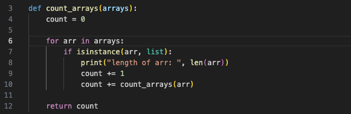
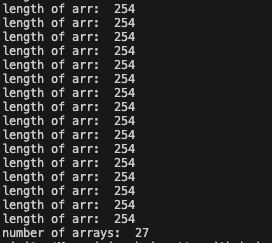
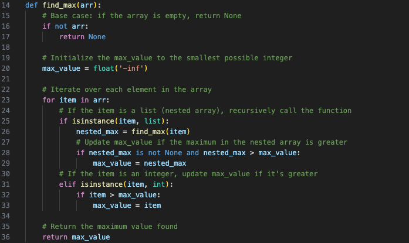
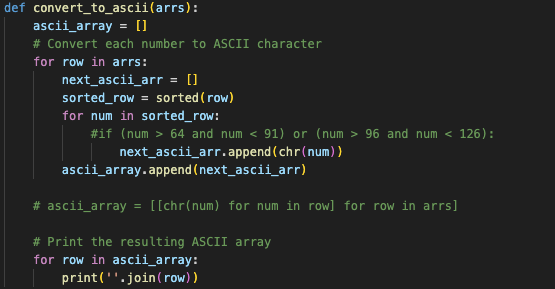
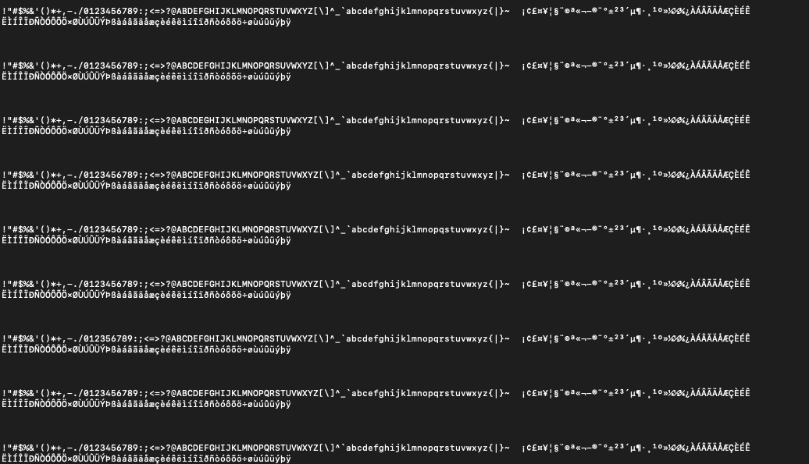
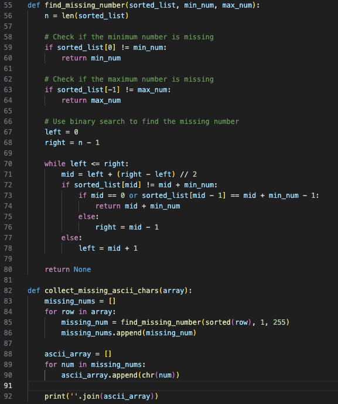
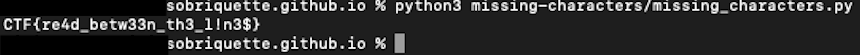
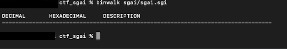
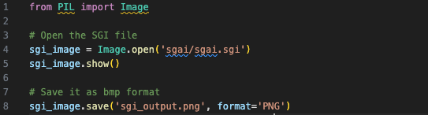
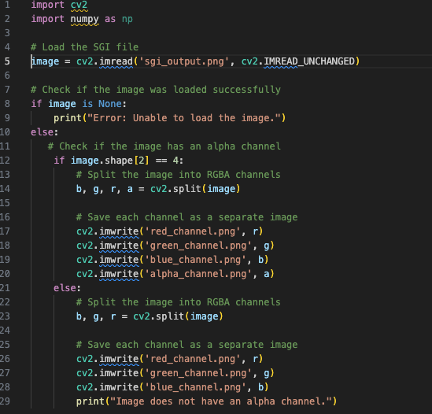

My first security con: BSidesSF 2024
I've never actually been to a tech conference; I'm pretty introverted and making small talk with a bunch of strangers in a crowded room can be overwhelming. I've had a growing interest in the world of cyber security over the past several years, but it's mostly just been curiosity than exploration. The most I was involved with "security" (which was really more privacy-focused) at work was bringing my teams' applications and databases up-to-code w.r.t. data compliance and privacy regulations like GDPR.
BSidesSF seemed like a great introduction into the different disciplines of security and an opportunity for me to discover which areas I could potentially be interested in exploring as a next step in my career.
I ended up skipping all the talks because 1) they were always full and 2) I thought going to the hacking villages and doing the CTF challenges would be a better hands-on, learning experience.
While you can find all the challenges and their respective solutions in the BSides CTF 2024 GitHub repo, I'll be walking through my process for some of the problems I thought were extra fun to solve. This was my first time doing a CTF and joined with virtually an empty toolbet, but walked away with good learnings and new skills!
color-picker challenge
(Click on the bullet to expand the details.)
Challenge overview
This was a web challenge with a color-picker app running on the CTF server. You were provided a URL and the hint, "I wonder what color the flag is?".
When you click on the link, you land on a simple HTML page with nothing visible besides a dropdown with the CTA "Pick a shade" (homepage HTML here). The options were colors like pink, gray, and blue. After selecting an option and clicking the submit button, a results page loads with a table of the different shades associated with the color chosen.
For example, selecting "pink" would yield a table that looked something like this:
| Name | Hex code | Color |
|---|---|---|
| Pink | #FFC0CB | |
| Light pink | #FFB6C1 | |
| Pastel pink | #F8C8DC | |
| Pink orange | #F89880 |
Initial thoughts / brute force
My first thought was maybe this was one of those "hacker-y" problems I've seen and heard about, where you have to ssh into the machine to find the flag. But my teammate told me that the challenge would be labeled a PWN challenge, and not web. Okay cool, one possibility eliminated.
So back to the hint: it sounded like the flag wouldn't be something you'd find by choosing any of the color options in the dropdown because that'd be too simple. Nevertheless, I clicked through all the options and looked through the document and event changes to see if maybe the flag was hidden in the HTML or something -- you never know. As suspected, they were not.
I also noticed that the dropdown element was wrapped in a form element with an action attribute that calls a path /shade upon clicking the submit button, presumably an API endpoint. This means the data, i.e. the shades of colors, are a resource we're accessing via that endpoint. Maybe the flag is on the server? I tried hitting the server with some wild guesses at possible endpoints, like /flag, /ctf, /src...etc. I've been able to find source code, directories, and even trigger requests this way in the past, so figured I'd try it here. I didn't spend too much time on this though because they were wild guesses after all, and my hunch was that I missed a detail on the results page.
An interesting request URL
My next thought was to play with the option values themselves, and submitting them to see if I could break something; values like flag or CTF. Submitting the value CTF was interesting because it took me to a results page with a table of all possibles the shades of colors you could get.
And the most interesting part -- which I should've thought to check earlier -- was the URL of the results page. I didn't think to check the URL of the results page earlier because I was using Safari, which hides everything in the address bar besides the domain name. I thought the URL wasn't changing as a result, but it was.
The URL of this "show all results" page I found was:
https://color-picker-5861f5ad.challenges.bsidessf.net/color?range_start=A1&range_end=C142
A range of values? How interesting. Three columns: A, B, C. Okay, that matches the number of columns in the table. That means the colors are all mapped to some value in some table, somewhere. I just need to find the table.
So what if I put in a wrong value in the range? Like...A0.
Bam. I broke it, perfect. This was the error shown on the page:
Traceback (most recent call last): File "/app/server.py", line 90, in color response.raise_for_status() File "/usr/local/lib/python3.9/dist-packages/requests/models.py", line 1021, in raise_for_status raise HTTPError(http_error_msg, response=self) requests.exceptions.HTTPError: 400 Client Error: Bad Request for url: https://sheets.googleapis.com/v4/spreadsheets/18hFC6DvTZ-NtbYby7Sej0f8t8-6n0_GL7Uf25acuRk8/values/A0:C142?access_token=ya29.c.c0AY_VpZgVA9gYZdIwElOZ3JllcqgOZ90CiSW4Yhmo5mrXBXjdzby1l2Cn7QrlFtaWA_EfJRTS1ikcXajrVKHWgGJ2cLtAcyBvGCMvQPlJFcyma5n8BhZrbuUKEiSBcuZE6-QZR7pEj-fX0C_XEmMn1BlHCgC9eZ_sSDvIykQr-PLSUaFKNBGljFuelkms3hTnjEJ4XFoBO7t_4KUG1AuMdm0eQ5VW4J1vbusk95yfrWfQPnU4ZoRIJUrAK4nA5f6PRX1dHSk9imVRCPkhCLEhUcDdIFsipS7d4WcEFPBW4cV6Uao1NFOGBWDU6vfX2ZPlWDOsak1MMIx9BietAKK4mMo9cIlckNInEXvj2qzXH_hs5ARpO_ZnEcVVL385AJ3e_hWgwixXQMu5s_po2cM5M7bZZt8528dnsMp8tV6vxu4aFUcdumrqm0BcFefxw_uMe5FWy2zlRR0knnJgcO2xflg0p5zzORqi_SMa0wa5Mtmct2SBaj-3xzOvdBanBQ75Ia4n95v3skztag3h1f9txBswaS5FI6uv-7tgYoh4ueYJu4Xinb5B9ll4Iz5tq_rkWZRzWkq9uxyqBkwlzfBMjenR-zukkUk30Zfq4y580vUmwvbIe2pV2Js2b1cuW_rncfJbSpreyjxdnhqBSw-6shJjV7u1k86a8U1V8gk7y90IzhqxQS2f3jmoXauW296y_RkfzdYaBii9qt5neOsQz1IqMq6OrjyXlUpSep-lZFdVv5mZzd-xgUgUnraktyi0jYyYhvMRcxj5ljY2WeqlRrwW6yeiWBWwr0VMwfWOVIur8lv581BqjVJgypVIjMfZwYQ_BkYr_4VYhgQ65BzIFRUM0omb-VwsyypmR7f_v49U0jcBywBX5xggUXZJZzb099l8bpqRqtqg_YUsy04JtRS3oaOY6wR663e3-hpd0J802xBwooftfWnhfIx-Ujy0iRfua4IuV_d5SOS0Me3Xt02b_2sjYVRS4aVkg46ZSsaSmlf2xu63Y7h
Exciting! Looking at the stacktrace, we can see that the app makes a call to the Google Sheets API and even includes the API access token in the URL for us.
To better understand the structure of the URL, I took a quick look at the Google Sheets API documentation. The key things to note here are the location of {spreadsheetId} and the call to an endpoint /values. So now I know that my request generated an error because there is no such thing as an A0 cell in Google Sheets.
The solution
I felt pretty good about the CTF flag being hidden somewhere in this spreadsheet, so my next step was to hit the spreadsheet directly. I wanted to know more about the spreadsheet itself, so I dropped /values/A0:C142 so that I could get just the spreadsheet data:
https://sheets.googleapis.com/v4/spreadsheets/18hFC6DvTZ-NtbYby7Sej0f8t8-6n0_GL7Uf25acuRk8?access_token=ya29.c.c0AY_VpZjGuj91YkrxRLCMeajF1n5hgPCuTJ1QgeOGBTAfdL7FfldACUF94_RwwjlAux3pjUlYaZmcQozohdlUiDNLVwk_AVoLIynGXrY5ewpynOWbLma0_zbv8IMYQ9vCEe6xm1gkSDyFjw6CEg6lbriEnnOJy21aou6V98l_M4WHA6KMixWetOilhdl-KLdEiqbX41HF1a1VyX3p6kAdUoNHgQf6jJXJVqUXhALMSWrPFDkvMZDYR93z8LxmGFDlJyp5AVZAH9cPkUFbVldiGfFy9YKXlSok4Sy3UL-HMuj464WBQvjG4H1Ta_JiYiH0elzxocm0H0qo09pl_u3Yb7s4tbszKkt3KHhBlp10t-fQUSfYpJ-aHtta7AN387KMIacFQWZdQp9p3Z0bsBrsZnuntdhhFbFV2n40qgMa37enOwBF8mmXJZivqmFWahzwzn25Ms7hp1Jpx3Yo8vl7BeBOxs448pZYUS4iM8y3hl3S2qm8Xnyh0J60vj_SdI2ay2fIOuFvvu18RXx30usvYslbunnZq-2wi9jhq3zqxJOzhdf-YtqYUnsSjpsf5bxjWb7bh7z3Uvq8re4UyOmRVO_asBw648ZYuyQsQd5X-kfsfg0jwbQmZx7yh_J0zr0jO2keisSBj9z7v3sXyuuSMjcSqXZ0nxOQ88g0-v6-OyQwh0i8Y9I84X5vimBjbU3Y1MIe9Sj51OdirhQv63frz-hphX9Sd0aYj_cUV5FWIO8jvtgJlyfWZt4xYwu7bvapgFc5M2V-IyiehZXWInuVxOaw8uqji_lUoiV9f3yWec2sgJUzpdwgWyv1e5xQ2mgv1OF5edR7BjbxvQ_-X2vxVQf6J8ywQ31vM7oU2djrr8df7mucJ6pJWrd80kUf16IaBMrMeuQyYd8QUlW30o6ko0Q9iXupv3aRioFprrwVOdgVZVMhcYcMJcUvt5gJ5ZkWn6rYvozyqMoItXMll6icBJFhY9jwoZyYscMO03ekc0WlJVBoqd666FfAnd this is the response I got:
{
"spreadsheetId": "18hFC6DvTZ-NtbYby7Sej0f8t8-6n0_GL7Uf25acuRk8",
"properties": {
"title": "Color Sheet",
"locale": "en_US",
"autoRecalc": "ON_CHANGE",
"timeZone": "America/Los_Angeles",
"defaultFormat": {
"backgroundColor": {
"red": 1,
"green": 1,
"blue": 1
},
"padding": {
"top": 2,
"right": 3,
"bottom": 2,
"left": 3
},
"verticalAlignment": "BOTTOM",
"wrapStrategy": "OVERFLOW_CELL",
"textFormat": {
"foregroundColor": {},
"fontFamily": "arial,sans,sans-serif",
"fontSize": 10,
"bold": false,
"italic": false,
"strikethrough": false,
"underline": false,
"foregroundColorStyle": {
"rgbColor": {}
}
},
"backgroundColorStyle": {
"rgbColor": {
"red": 1,
"green": 1,
"blue": 1
}
}
},
"spreadsheetTheme": {
"primaryFontFamily": "Arial",
"themeColors": [
{
"colorType": "TEXT",
"color": {
"rgbColor": {}
}
},
{
"colorType": "BACKGROUND",
"color": {
"rgbColor": {
"red": 1,
"green": 1,
"blue": 1
}
}
},
{
"colorType": "ACCENT1",
"color": {
"rgbColor": {
"red": 0.25882354,
"green": 0.52156866,
"blue": 0.95686275
}
}
},
{
"colorType": "ACCENT2",
"color": {
"rgbColor": {
"red": 0.91764706,
"green": 0.2627451,
"blue": 0.20784314
}
}
},
...
]
}
},
"sheets": [
{
"properties": {
"sheetId": 0,
"title": "Sheet1",
"index": 0,
"sheetType": "GRID",
"gridProperties": {
"rowCount": 1000,
"columnCount": 26
}
}
},
{
"properties": {
"sheetId": 430183158,
"title": "Sheet2",
"index": 1,
"sheetType": "GRID",
"gridProperties": {
"rowCount": 1000,
"columnCount": 26
}
}
}
],
"spreadsheetUrl": "https://docs.google.com/spreadsheets/d/
18hFC6DvTZ-NtbYby7Sej0f8t8-6n0_GL7Uf25acuRk8/edit"
}
Properties, formatting, blah blah blah...oh hello, what's this? An array containing data about all the sheets in the spreadsheet? Awesome. So there are two sheets in this spreadsheet. The colors are coming from Sheet1, so the flag -- *fingers crossed* -- must be in Sheet2.
All that was left to do was modify the URL to this:
https://sheets.googleapis.com/v4/spreadsheets/18hFC6DvTZ-NtbYby7Sej0f8t8-6n0_GL7Uf25acuRk8/values/Sheet2!A1:Z200?access_token={...}
Drum roll please...
Tada!
{
"range": "Sheet2!A1:Z200",
"majorDimension": "ROWS",
"values": [
[
"Flag",
"CTF{acc355-t0k3n5}"
]
]
}
We've found our flag! The answer is: CTF{acc355-t0k3n5}. Submitted this to the CTF server, had my answer verified, and earned a couple hundred points for the team 👍.
Super fun problem to work through. I felt like a lil' web detective with my magnifying glass, following the breadcrumbs.
missing characters challenge
Challenge overview
This was a cryptography challenge. As a full-stack software engineer, a web challenge like color-picker was more in my wheelhouse. I have vague notions of how encryption methods like RSA, SHA256...etc. work, but have zero experience with cryptography otherwise.
The challenge was called missing characters and the hint was: "Can you read between the lines? Flag is the answer in the form CTF{----_-------_---_-----}".
You are provided a file called cipher.txt, and that's it.
Array properties and ChatGPT
Firstly, the textfile is massive. I took a quick scan through it and this is what stood out to me:
- it's a 2D array
- numbers are not sorted in each nested array
- too many numbers in each array to tell if they have the same numbers
My first instinct was that maybe each array represents one of the "missing characters". Based on the hint about the structure of the flag, there are 19 characters missing in total. I wrote a Python function to count the number of arrays and also print the length of each nested array:
And my output looked something like this:
I found it interesting that all the arrays had the same length because that told me that I shouldn't be relying on the property differences between the nested arrays to find a pattern. I.e. If the arrays had been different lengths, my thinking would be that each array maybe computes to something different or one array holds the key to deciphering the next array...something of that sort.
(The number 254 tickled something in the back of my brain, but I didn't come back to it until way later. A shame, because if I had realized sooner the significance of it, I would've solved this challenge in 1/3 of the time).
So this is where I kind of got thrown off track. In my head, my goal had become to find 19 characters, not 27. If I had included all the characters in the full flag, starting with "CTF", I would have realized that there are 27 characters! Another doh! moment in looking back on this.
I wasn't quite sure where to go from here and started second-guessing my gut instinct that these arrays and/or their values represented the missing characters somehow. Also, what did "read between the lines" mean?
If there were 27 arrays and I only needed 19, maybe I actually did need to do some mathematical transformation with the numbers in the arrays to reduce them into something that would represent 19 missing characters. I grilled ChatGPT on whether 2D arrays have any significance in cryptography, what cryptographic methods produce 2D arrays, what keys you can generate with with 2D arrays...etc.
I even asked ChatGPT, "What could an array of numbers with a length of 254 mean?". Apparently, it could represent signal data, image data, sensor readings, time series data...none of which seemed relevant to characters and would get me closer to revealing them.
I got stuck in a bit of a rabbit-hole and lost sight of the problem.
It was just ASCII
(Spoilers in the title!) I looked back again at the output I got from my count_arrays function: 254 elements in each array. Frustrated, I asked my teammate this time, "Does this number have any significance to you?", and to which they responded, "I know that ASCII has 255 characters, but not 254". OH. What a face-plant, bang-my-head-on-the-desk sort of moment. How did it not occur to me that these could be the decimal values for ASCII characters sooner? How could I have forgotten that there are 255 characters in the extended ASCII codes?
If it was ASCII, then the largest number in the whole dataset should be 255. I already knew there weren't zeroes or negative numbers. So a quick function to check will do:
And indeed, the largest value in the whole dataset was 255.
Now we were getting somewhere. I wanted to just print each array to see what the output looked like:
At first, I limited it to just letters of alphabet, hence the if condition that's commented out. That didn't produce a discernible flag, so I removed the condition and re-ran the script.
The output:
I thought that sorting the values first before converting them to ASCII was a stroke of brilliance and the flag would become immediately clear. But they all looked the same to me! What was missing? Was there actually even something missing at all?! I just wanted to solve this and move on.
I took a breath and looked again, but more closely this time, and finally, yes, there was a character missing in each array! C from the first array, T from the second, F from the third...ok yes this is the start of the flag. We got it.
The solution
Golly gee willikers did it take me way too long to string (pun intended) all the pieces together, but I knew what I had to do to finally capture this flag: a binary search.
Lo and behold, the flag:
sgai forensics challenge
Challenge overview
This challenge was actually four challenges in one -- we were given one file, which had four flags hidden in it. The challenges had their respective number of points and were referred to as sgai-1, sgai-2, sgai-3, and sgai-4. You can view the challenge notes here and view the file with the flags hidden here.
Initital approach
By the time I got to this challenge, I had already solved a few other forensics challenges. I learned to use file to get information about the file type and other properties, xxd to create and analyze hexadecimal dumps from a file, run strings to extract printable text from binary files, and installed binwalk to search and extract any embedded files from a binary image.
The first thing I did was run file, which told me this:
sgai/sgai.sgi: SGI image data, RLE, 3-D, 3072 x 3072, 4 channels4 channels -- whatever that means -- in a file that is supposed to contain 4 flags? How interestingly convenient. I felt like I was onto something here.
Because I had so much success with binwalk in the other challenges, I ran that next. (What I should've done was actually first run strings and xxd, but more on that later).
The funny thing is, I got nothing. This was my result:
As a newbie, this left me stumped. There was nothing embedded in here? I knew that binwalk isn't perfect and can give false positives, but nothing?
Understanding the SGI file format
Let's take a step back: what's an SGI file? I knew it was some sort of image file type, but how does it work? How does it compress -- or not -- data and what type of encoding does it use? I decided to dig in a little (but being careful not to rabbit-hole).
SGI stands for Silicon Graphics Image, and is a raster graphics file format created by a high-performance computing manufacturer called (as you may have guessed) SGI. The founders developed the first VLSI ("very-large-scale integration") implementation of a geometry pipeline, which is the first stage in computer graphics systems and does the modeling and computations needed to display 3D images.
SGI files typically use RLE (run-length encoding) for data compression. It has a number of common file extensions that indicate which, and how many, channels are in the file. See the table below:
| File extension | Channels |
|---|---|
| .sgi or .rgb | 3 color channels (RGB) |
| .rgba | 3 color channels and alpha |
| .bw or .int | black and white |
| .inta | black and white and alpha |
(The SGI Wiki page also includes this information, among other helpful technical details I leveraged, e.g. headers and magic numbers).
Our file command revealed that there were 4 channels; I found this confusing because it made me wonder why the extension used was .sgi and not .rgba. Regardless, I continued with the assumption that here were 4 channels to work with.
Now that I understood that "channels" is referring to the RGBA color space it seemed sensible to me that what I had to do was to split the image file into each channel to find the hidden flag.
Attempt 1: converting to PNG
Because I wasn't able to extract any information from the SGI file directly with binwalk, I figured maybe converting it to a more commonly-used image file format like PNG might make a difference. I'd done a .docx to PDF conversion to solve one challenge and worked with PNG files in a couple other forensics challenges, so it seemed like a similar principle could apply here.
I got ChatGPT to write me a quick function to do the conversion for me:
The first time I ran this SGI-conversion script, I got a completely blank, empty PNG. Like, literally no data at all -- I ran binwalk and xxd and there was just nothing. Very bizarre, figured it might be a fluke (and also because I have no experience using the Pillow library), so I ran it again.
This time, I got a PNG that looks exactly like the SGI file.
I first ran strings on it, for which the output is here.
The header chunk IHDR told me what was already obvious: that this was a PNG file. Sometimes there's extra stuff beteween the header chunk and the IDAT chunk, which contains the actual image data -- but nothing like that here. In similar forensics challenges where we were given only a single image file, running strings once revealed four IDAT chunks, meaning that there were actually four images hidden in one image file. Not this time.
I even did a search for CTF{ in the output file just in case. Nada.
I then ran binwalk on it, and it thought that there was a compressed file in the PNG. Interesting.
The -Me flag when using binwalk recursively searches for binary data and attempts to extract it. What the output told me was that whatever binwalk found and extracted basically had nothing in it, i.e. the files it scanned in /_sgi_output.png.extracted/29.
So, I was pretty much at a dead end with this approach.
Okay, let's go back to figuring out how to split these RGBA channels into individual files. Again came ChatGPT to the rescue; it wrote a quick script for me using OpenCV to split the PNG.
I kept running into the error "Error: Unable to load the image.", even though I knew I had the right pathing and everything. So this led me to think that PNG wasn't the right file format.
Attempt 2: splitting on the SGI file itself
(If you read the spoiler in the previous section regarding the answer to the sgai-3 challenge, just ignore that for now).
Okay so my sgi_channel_split.py script didn't work. What if we just attempt to run it on the original .sgi file itself?
Again, I got the error "Error: Unable to load the image.". I read through the OpenCV documentation and did not see SGI explicitly listed as one of the supported file types. (And this is also where it's good to validate what ChatGPT tells you because it told me that OpenCV supports SGI files). Bummer. Moving on...
Attempt 3 (with success): converting to a BMP
So no results with the PNG and no results with the SGI file. What other ways could the data in the SGI file be represented?
The SGI file format is basically like a bitmap (which literally means a "map of bits" and stores a variable number of bits per pixel), although bitmaps are typically uncompressed and the SGI file that I had was compressed with RLE. Regardless, I used my convert_sgi.py script again to produce a BMP.
I followed-up with running the sgi_channel_split.py script on the BMP and, at long last, I had my channel-split PNGs! No errors, and how glorious that was. (I did find it strange that I only had PNGs for the RGB files -- where did the transparency layer go? -- but I was too excited about getting the flag to care that much. More on this little detail in the Retrospectives section...)
Looking at any of the RGB PNGs reveals the answer to the sgai-3 challenge: CTF{invisibility_cloak}. You can find those in my GitHub repo.
I submitted it to the CTF server and woohoo! More points for the team.
Retrospectives
Learning the right order of procedures
I briefly mentioned in the Initial Approach section that instead of jumping straight to binwalk, I should've first run strings. And if that failed to yield anything, I should've moved on to running xxd before even thinking of using binwalk. Here's why:
That ^ is the output of running strings directly on the SGI file. I would've gotten one of the four flags in the challenge within the first minute!
If I started with xxd instead, I similarly would've found the first flag immediately:
The idea behind running these basic commands first before diving into the binary data is the same as if you were trying to figure out why a webpage won't load on your phone when it's on your home WiFi network. We'd probably first ask questions like,
- are we still connected to the (or a) network?
- if so, is it the right network?
- can I load the page on cellular data?
...before unplugging or resetting the router, or running diagnostics tests on your phone because maybe now we're panicking that our phone's broken or whatever.
You live and you learn. After all, this is the kind of experience I wanted to get out of doing this CTF competition!
Checking assumptions
Another embarrassing and laughable oversight I made while doing this challenge was assuming the BMP that my script produced not only looked like the SGI and PNG files, but also that Pillow had included the RGBA layers of the original SGI.
Ya hate to see it, but when I ran the image conversion script and got the BMP, I didn't even look at it. I was so fixated on the fact that I need to remove the alpha layer that I simply went straight to running the channel-split script. While it did give me the results I wanted, I actually could've skipped the channel splitting completely! Because Pillow doesn't support reading and writing BMPs with the alpha channel, the BMP I got from my conversion script had the transparency layer stripped by default.
If I had simply looked at the resulting BMP, I would've seen the CTF flag. While it would've saved me a minute at most (the channel-split script is fast), it is a good reminder to check your assumptions at each step so you don't miss something so obvious. Even though the savings were small here, in a different challenge it could mean the difference between having the time to solve just one challenge versus two, or three, or more!
It is also a good reminder to not just blindly use whatever code ChatGPT gives me -- even though it works perfectly the first run and gives me exactly what I want -- and do a little bit of research into the libraries or methods being called. If I had done a quick read through Pillow's Image module documentation on file formats, I would've known that it doesn't support alpha/transparency layers for BMP.
Additionally, I noted in the section, "Attempt 3", that I was missing a PNG for one of the channels: the alpha channel. When I decided to convert the SGI to a BMP, I did first check whether there would be any data loss in the conversion, e.g. unable to handle the alpha channel. But on a hypothetical level and not specific to the Pillow library (guh). All I did was glance at a highlighted section on the Wikipedia page on BMP formats and some of the top Stack Overflow posts from a quick Google search: they said that yes, BMP supports transparency. Didn't bother to click into any of them to actually read on because the clock was ticking and the competition was ending soon.
If I did a bit of reading (wasn't even that much), I would've learned that traditional BMP files do not include an alpha channel and therefore do not support transparency. (While 32-bit BMP includes an additional byte for an alpha channel, that is a variation on the BMP specifications). PNGs, on the other hand, have built-in support for transparency. Put this information together with the Pillow documentation and it would've been so clear that the answer was already in the BMP file I had.
Digging a little deeper when there are unexpected results
As I mentioned in the walkthroughs of the various attempts I made to split the file into RGBA channels, I got some errors I didn't expect during the challenge but couldn't reproduce in doing this write-up. The channel-split script that you'll find in my GitHub repo is unmodified from what ChatGPT spat out for me. The only changes I made between runs were the input file paths. Maybe I did actually mess up the file path or had a typo or something and that's why the script couldn't load the PNG. There's no way for me to go back in time, but I think if I put a little more time into doing some debugging, I could have produced the channel-split PNGs that I wanted from the get-go, instead of immediately moving onto the next approach.
Takeaways
- Do basic, sanity-check tests first before getting into the weeds.
- Check. my. assumptions!!!
- Take a moment to take a step back and refocus on what the challenge is actually asking for.
- Haste makes waste -- take the extra 5-20 minutes to do some debugging or actually read docs because it saves more time down the road.
- Use Google search results and ChatGPT to cross-reference information, but don't strictly depend on either and assume what's posted is true.
Thanks for reading! If you want to check them out, the files and scripts I mentioned in this post are all uploaded to my GitHub repo.